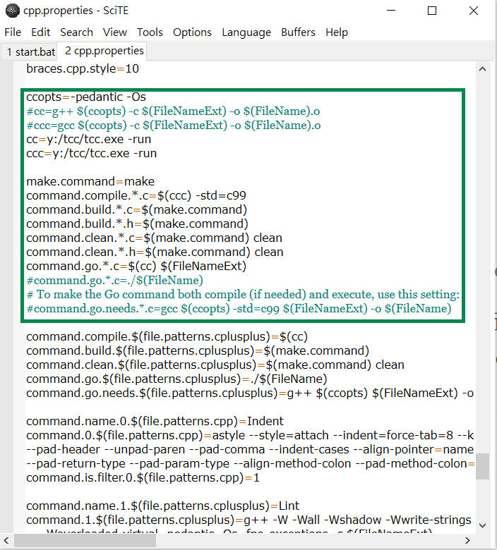

W7 <<
Previous Next >> W8
W7-1
先下載fall2020_v2.7z解壓縮到c:/tmp
把tcc跟gnuplot放到c:/fall2020_v2/data 裡面
接著必須將 y:\tcc\ 放入隨身系統中的 path 命令搜尋路徑中,修改start.bat
修改完關掉並重新啟動start.bat
修改 SciTE 編輯器中的 cpp.properties, 讓 Tools -> Go 可以呼叫 tcc.exe 類解譯編輯器中副檔名為 .c 的 ANSI C 程式.

完成上述可納入練習1 hello.c,利用 Tools -> Go 直接進行存檔並且執行.
.
#include <stdio.h>
int main() {
printf("Hello, world!\n");
return 0;
}
完成以上,可執行下面程式
/* Runge Kutta for a set of first order differential equations */
#include <stdio.h>
#include <math.h>
#define N 2 /* number of first order equations */
#define dist 0.1 /* stepsize in t*/
#define MAX 30.0 /* max for t */
FILE *output; /* internal filename */
FILE *output1; /* internal filename */
// 利用 pipe 呼叫 gnuplot 繪圖
FILE *pipe;
void runge4(double x, double y[], double step); /* Runge-Kutta function */
double f(double x, double y[], int i); /* function for derivatives */
void main(){
double t, y[N];
int j;
output=fopen("osc.dat", "w"); /* external filename */
output1=fopen("osc1.dat", "w"); /* external filename */
y[0]=1.0; /* initial position */
y[1]=0.0; /* initial velocity */
//fprintf(output, "0\t%f\n", y[0]);
for (j=1; j*dist<=MAX ;j++) /* time loop */{
t=j*dist;
runge4(t, y, dist);
fprintf(output, "%f\t%f\n", t, y[0]);
fprintf(output1, "%f\t%f\n", t, y[1]);
}
fclose(output);
fclose(output1);
pipe = popen("gnuplot -persist","w");
//fprintf(pipe,"set term png enhanced font \"v:/fireflysung.ttf\" 18 \n");
fprintf(pipe,"set term png enhanced font \"y:/wqy-microhei.ttc\" 18 \n");
//fprintf(pipe,"set yrange [68:70]\n");
fprintf(pipe,"set output \"test.png\"\n");
fprintf(pipe, "plot \"osc.dat\" title \"位移\" with lines, \"osc1.dat\" title \"速度\" with lines\n");
fprintf(pipe,"quit\n");
fprintf(pipe,"quit\n");
pclose(pipe);
}
void runge4(double x, double y[], double step){
double h=step/2.0, /* the midpoint */
t1[N], t2[N], t3[N], /* temporary storage arrays */
k1[N], k2[N], k3[N],k4[N]; /* for Runge-Kutta */
int i;
for (i=0;i<N;i++){
t1[i]=y[i]+0.5*(k1[i]=step*f(x,y,i));
}
for (i=0;i<N;i++){
t2[i]=y[i]+0.5*(k2[i]=step*f(x+h, t1, i));
}
for (i=0;i<N;i++){
t3[i]=y[i]+ (k3[i]=step*f(x+h, t2, i));
}
for (i=0;i<N;i++){
k4[i]= step*f(x+step, t3, i);
}
for (i=0;i<N;i++){
y[i]+=(k1[i]+2*k2[i]+2*k3[i]+k4[i])/6.0;
}
}
double f(double x, double y[], int i){
if (i==0)
x=y[1]; /* derivative of first equation */
if (i==1)
x=-y[0]-0.5*y[1];
return x;
}
產生的結果
W7 <<
Previous Next >> W8